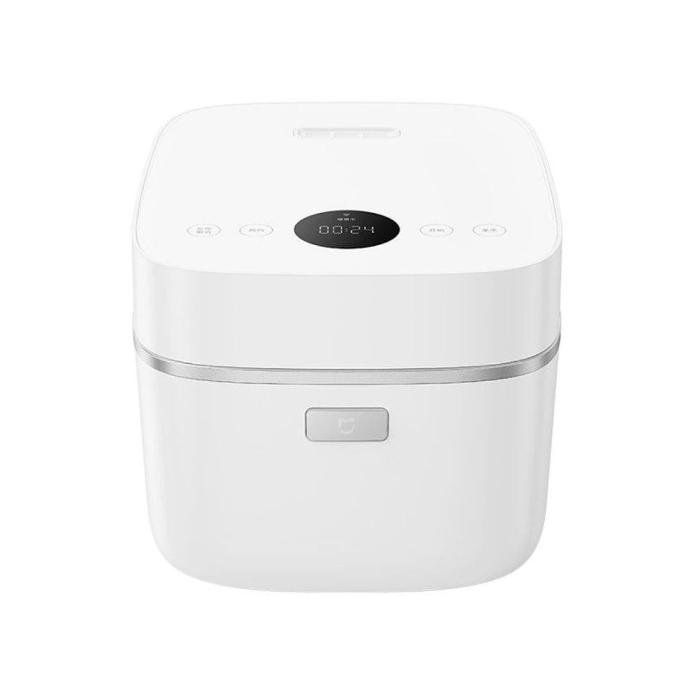

米家智能电饭煲 3L

小米生态链的经典小家电，3L 容积适合一到六人家庭，IH 电磁环绕加热配合厚釜内胆，煮出的米饭粒粒分明。支持米家 App 远程预约与智能联动，几百元的价位提供了远超预期的体验，是入门智能电饭煲的代表作之一。
客观评测
米家智能电饭煲 3L 采用 IH 电磁环绕加热与厚约 2.0mm 的厚釜内胆（约），1100W 功率（约）可快速升温并模拟柴火加热曲线。实测精煮模式米饭粒粒分明、口感软糯适中，煮粥与煲汤不易溢锅。OLED 屏与米家 App 结合，可远程预约、查看进度并联动智能家居，24 小时预约对上班族友好。3L 容积对三口之家正好，机身紧凑，长期使用内胆涂层需要悉心保养。
主观点评
三百多块钱的小家电，却让下班回家有口热饭这件事变得很省心：出门前放好米和水，路上在手机上按一下，进门就是饭香。煮粥、煲汤、做蛋糕它也能胜任，偶尔还能联动电饭煲和音箱做个小场景。它当然比不上几千元的高端电饭煲，但作为一台把基本功做扎实的国民电饭煲，它把智能体验拉到了平价价位，很难要求更多。
优点与不足
- 几百元就有 IH 加热与厚釜内煲，煮饭口感扎实
- 米家 App 远程预约与智能联动体验成熟好用
- 3L 体积小巧不占地，收纳与搬动都方便
- 内胆涂层长期使用后有磨损风险，需用软质饭铲
- 快煮模式米饭口感一般，好饭仍需精煮程序
参数规格
| 类型 | 智能电饭煲 |
|---|---|
| 容积 | 3 L（约 1–6 人份） |
| 加热方式 | IH 电磁环绕加热（约） |
| 内胆 | 厚釜不粘内胆（厚约 2.0 mm） |
| 功率 | 约 1100 W |
| 操控 | OLED 显示屏 + 米家 App 远程控制 |
| 功能 | 精煮、快煮、煮粥、煲汤、蛋糕、保温等 |
| 预约 | 24 小时预约，可联动小米智能家居场景 |
| 能效 | 1 级能效（约） |
| 电源 | 220 V / 50 Hz |
| 尺寸 | 约 300 × 250 × 205 mm（约） |
| 重量 | 约 4.3 kg（约） |